측량기능사 (2007-07-15 기출문제)
1과목: 임의 구분
1. 삼각점 성과표를 통해 알 수 있는 정보가 아닌 것은?
- 삼각점의 등급
- 경도, 위도
- 진북 방향각
- 삼각점의 지번
(정답률: 36%)

2. 트래버스 측량의 폐합비 허용 범위는 목적과 조건에 따라 다르다. 일반적으로 시가지에 적용되는 허용범위는?
- 1/5,000 ~ 1/10,000
- 1/1,000 ~ 1/2,000
- 1/500 ~ 1/1,000
- 1/300 ~ 1/1,000
(정답률: 54%)
3. 다음 그림은 ①,②,③ 노선을 지나 A, B점 간을 직접 수준 측량한 결과표이다. B점의 최확값은? 직접 수준 측량 결과표
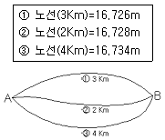
- 16.725m
- 16.727m
- 16.729m
- 16.735m
(정답률: 69%)
4. 레벨의 조정을 위하여 A, B에 세운 표척을 시준하여 아래의 값을 얻었다. 레벨을 조정한 후 D점에서 본 B표척의 값은 얼마이어야 하는가?
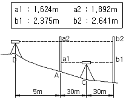
- 2.643m
- 2.672m
- 2.682m
- 2.688m
(정답률: 25%)
5. 일정한 경사지에서 A, B 두점 간의 경사거리를 잰 결과 100m 였다. AB간의 고저차가 20m였다면 수평거리는?
- 93.89m
- 93.98m
- 97.89m
- 97.98m
(정답률: 50%)
6. 삼각형의 3개 내각을 각각 다른 경중률로 측정할 때 각각의 최확치를 구하는 방법 중 옳은 것은?
- 경중률에 반비례하여 배분
- 경중률에 비례하여 배분
- 각의 크기에 비례하여 배분
- 각의 크기에 반비례하여 배분
(정답률: 39%)
7. 평판측량에서 평판을 세울 때 발생하는 오차 중 다른 오차에 비하여 그 영향이 매우 큰 오차는?
- 거리 오차
- 방향맞추기 오차
- 중심맞추기 오차
- 기울기 오차
(정답률: 73%)
8. 다각측량에서 다음과 같은 결과를 얻었을 때 측선 8의 배횡거는?
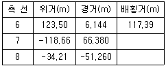
- 2⑤.034m
- 189.914m
- 206.680m
- 222.084m
(정답률: 25%)
9. 다음 중 지오이드면을 가장 바르게 설명한 것은?
- 평균해수면으로 지구 전체를 덮었다고 생각하는 가상의 곡면
- 반지름을 6370Km로 본 구면
- 지구를 회전타원체로 본 표면
- 지구를 구면으로 본 표면
(정답률: 71%)
10. 수직각 중 위쪽 방향을 기준으로 목표물에 대한 시준선과 이루는 각을 무엇이라 하는가?
- 방향각
- 고저각
- 천저각
- 천정각
(정답률: 53%)
11. 수준측량할 때 측정자의 주의 사항으로 옳은 것은?
- 표척을 전ㆍ 후로 기울여 관측할 때에는 최대 읽음값을 취해야 한다.
- 표척과 기계와의 거리는 6m 내외를 표준으로 한다.
- 표척을 읽을 때에는 최상단 또는 최하단을 읽는다.
- 표척의 눈금은 이기점에서는 1mm까지 읽는다.
(정답률: 53%)
12. 다음 중 세부측량에 주로 이용되는 측량으로 가장 거리가 먼 것은?
- 평판 측량
- 사진 측량
- 스타디아 측량
- 삼변 측량
(정답률: 29%)
13. 트래버스(Traverse)측량에서 어느 임의의 측선에 대한 방위각이 160° 라고 할 때 이 측선의 방위는?
- N 160° E
- S 160° W
- S 20° E
- N 20° W
(정답률: 65%)
14. 하천 양안의 고저차를 측정할 때 교호 수준 측량을 이용하는 주요 원인은?
- 기계오차와 광선굴절오차 제거
- 연직축 오차 제거
- 수평각 오차 제거
- 기포관축 오차 제거
(정답률: 54%)
15. 20″ 읽기 트랜싯으로 각을 측정하여 초독 20°20′20″, 3배각의 종독이 10°20′20″였다. 단측법에 의한 결과가 116°40′20″일 때 정확한 값은?
- 116°39′40″
- 116°40′00″
- 116°40′20″
- 116°40′40″
(정답률: 40%)
16. 그림과 같이 AB 측선의 방위각이 160° 이다. 이때 B의 교각이 120°라면 BC 측선의 방위각을 계산한 값은?
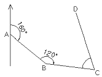
- 100°
- 120°
- 160°
- 180°
(정답률: 63%)
17. 그림과 같은 평면 삼각형 ABC에서 ∠A, ∠B, ∠C와 거리 a를 알고 있을 때 거리 b를 구하는 식은?
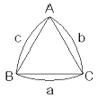
- log b= log sin A + log sin B - log a
- log b= log sin B - log sin A - log a
- log b= log a + logsin B - log sin A
- log b= log a - log sin B + log sin A
(정답률: 34%)
18. 그림에서 A점의 합위거 및 합경거는 0m이고, B점의합위거는 60m이며 합경거는 30m이다. 이 때 AB측선의 길이는?
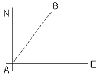
- 8.190m
- 15.421m
- 33.541m
- 67.082m
(정답률: 28%)
19. 평판 측량의 장점이 아닌것은?
- 잘못 측량을 하였을 경우, 현장에서 쉽게 발견하여 보완할 수 있다.
- 도지를 현장에서 직접 사용하므로 신축으로 인한 오차가 발생하지 않는다.
- 내업 시간이 절약된다.
- 특별한 경우를 제외하고는 야장이 불필요하므로 다른 측량에 비하여 그만큼 시간을 절약할 수 있다.
(정답률: 60%)
20. 트래버스 측량의 용도와 가장 거리가 먼 것은?
- 경계 측량
- 노선 측량
- 종ㆍ횡단 수준 측량
- 지적 측량
(정답률: 52%)
2과목: 임의 구분
21. 삼각측량의 기선 선정시 주의 사항으로 옳지 않은 것은?
- 1회의 기선확대는 기선길이의 3배 이내로 한다.
- 기선의 설정위치는 평탄한 곳이 좋다.
- 검기선은 기선길이의 40배 정도의 간격으로 설치한다.
- 평탄한 곳이 없을 때에는 경사가 1:25 이하의 지형에 기선을 설치한다.
(정답률: 69%)
22. 수준측량에 관한 용어의 설명으로 틀린 것은?
- 연직선이란 지표면의 어느 점으로부터 지구 중심에 이르는 선이다.
- 지평선이란 연직선에 직교하는 직선이다.
- 기준면은 일반적으로 여러 해 동안 관측한 평균 해수면을 사용한다.
- 기준면에서부터 어떤 점까지의 수평거리를 표고라 한다.
(정답률: 39%)
23. 폐합 트래버스에 있어서 편각의 합은?
- 90°
- 180°
- 270°
- 360°
(정답률: 52%)
24. 전자파 거리 측정기에 대한 설명으로 틀린 것은?
- 전파 거리 측정기는 광파 거리 측정기보다 먼 거리를 측정할 수 있다.
- 전파 거리 측정기는 광파 거리 측정기보다 지면에 대한 반사파의 영향을 많이 받는다.
- 전파 거리 측정기는 광파 거리 측정기보다 기상에 대한 형향을 크게 받는다.
- 지오디메터(Geodimeter)는 광파 거리 측정기의 일종이다.
(정답률: 59%)
25. 측량에 대한 설명으로 틀린 것은?
- 측량은 정량적 해석과 정성적 해석이 가능하다.
- 측량은 지구표면에 국한된 대상물의 위치와 특성을 해석하는 것이다.
- 측량은 인간생활에 필요한 도로, 철도, 교량 등의 공사에 필수적이다.
- 최근 항공기와 인공위성을 이용한 다양한 지형정보를 얻고 있다.
(정답률: 60%)
26. 기계에서 30m 떨어진 곳에 표척을 세워 기포가 4눈금 이동 되었을 때 표척의 읽음값 차가 0.024m를 얻었다. 이 때 수준기의 감도는 얼마인가?
- 21″
- 31″
- 41″
- 51″
(정답률: 35%)
27. 거리 측량한 결과 평균 제곱근 오차(표준오차)가 2cm일 때 확률 오차는 얼마인가?
- ±1.949cm
- ±1.649cm
- ±1.349cm
- ±1.049cm
(정답률: 44%)
28. 다음 중 평판측량 방법이 아닌 것은?
- 방사법
- 전진법
- 교회법
- 삼사법
(정답률: 77%)
29. 다음 삼각망의 조정에 대한 설명으로 옳지 않은 것은?
- 한 측점에서 여러 방향의 협각을 관측했을 때 여러 각 사이의 관계를 표시하는 조건을 측점조건이라 한다.
- 삼각형 내각의 합은 180°라는 각조건은 도형조건이다.
- 삼각형 중의 한 변의 길이는 계산 순서에 따라 일정하지 않다.
- 한 측점의 둘레에 있는 모든 각의 합은 360°이다.
(정답률: 64%)
30. 삼변을 측정하여 값 a,b,c를 구했다. aqus의 대응각 A를 반각공식으로 구하려 할 때 sin A/2의 값은? (단,
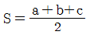
)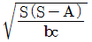
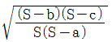
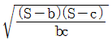
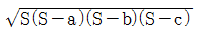
(정답률: 37%)
31. 수준측량시의 오차의 원인 중에서 우연오차라고 볼 수 없는 것은?
- 시차에 의한 오차
- 표척 읽음에 의한 오차
- 기상변화에 의한 오차
- 구차와 기차에 의한 오차
(정답률: 27%)
32. 완화곡선의 종류에 해당되지 않는 것은?
- 3차 포물선
- 클로소이드 곡선
- 2차 포물선
- 렘니스케이트 곡선
(정답률: 80%)
33. 사진측량에서 대공표지를 설치하는 이유로서 가장 적합한 것은?
- 사진 상에서 점의 위치를 명확하게 판독하기 위해서
- 사진의 해상력을 높이기 위해서
- 입체시를 하기 위해서
- 사진정리 및 관리에 필요해서
(정답률: 60%)
34. 사진측량 촬영에 사용하는 보통각 렌즈의 초점거리는 보통 얼마 정도인가?
- 80mm
- 150mm
- 210mm
- 300mm
(정답률: 32%)
35. 디지타이저를 이용하여 기존도면을 입력 할 때, 장점이 아닌 것은?
- 손상된 도면도 입력 가능하다.
- 불필요한 속성은 입력되지 않는다.
- 같은 정도의 높은 정확도를 기대할 수 있다.
- 레이어로 구분하여 입력이 가능하.
(정답률: 48%)
36. GPS 위성궤도의 고도는 약 얼마인가?
- 10200 km
- 20200 km
- 30200 km
- 40200 km
(정답률: 70%)
37. 곡선부 철도의 내외측 레일 사이의 높이차를 무엇이라고 하는가?
- 확폭(slack)
- 완화 곡선
- 캔트(cant)
- 레일 간격
(정답률: 61%)
38. 노선측량에서 기지점에서 노선시점(B.C)까지의 거리가 1600m 이고 접선길이 (T.L.)가 200m, 곡선길이 (C.L.)가 430m이면 노선종점(E.C.)까지의 거리는?
- 1800m
- 2030m
- 2230m
- 2540m
(정답률: 46%)
39. 철도, 도로, 수로, 등과 같이 긴 노선의 성토량, 절토량을 계산할 경우에 주로 이용되는 체적 계산 방법으로 가장 적합한 것은?
- 단면법
- 점고법
- 지거법
- 횡거법
(정답률: 25%)
40. 축척 1:3000 인 도면의 면적을 측정하였더니 3cm2이었다. 이 때 도면은 종횡으로 1% 씩 수축되어 있다면 이 토지의 실제 면적은 얼마인가?
- 2700m2
- 2727m2
- 2754m2
- 2540m2
(정답률: 43%)
3과목: 임의 구분
41. 단곡선 설치 과정에서 가장 먼저 정해야 할 사항은?
- 곡선 반지름
- 시단현
- 접선장
- 중심말뚝의 위치
(정답률: 39%)
42. 다음 그림과 같이 수준측량을 하여 각 측점의 높이를 측정하였다. 절토량 및 성토량이 균형을 이루는 계획고는?
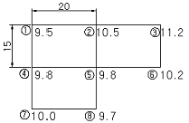
- 9.59m
- 9.95m
- 10.⑤m
- 10.50m
(정답률: 38%)
43. GPS 측량에서 위성은 지구를 둘러싸는 6갱의 궤도상에 배치된다. 궤도당 최소 몇 대씩 배치 되어 있는가?
- 8
- 6
- 4
- 2
(정답률: 51%)
44. 등고선에 대한 설명 중 올바른 것은?
- 동일 등고선상에 있는 각점은 모두 같은 높이이다.
- 높이가 다른 두 등고선은 어느 경우라도 교차하거나 만나지 않는다.
- 등경사 지면에 대한 등고선은 양 등고선 간의 간격이 같은 정도로 작아진다.
- 지표면의 경사가 급한 곳에서는 등고선의 간격이 넓어진다.
(정답률: 49%)
45. 사진측량에서 촬영고도 1km에서 촬영한 탑의 윗부분이 연직점으로부터 100mm 떨어져 사진상에 나타난다면 탑이 변위가 5mm일 때 탑의 높이는 얼마인가?
- 0.5mm
- 5mm
- 50m
- 500m
(정답률: 39%)
46. 지형 측량의 작업 순서로 옳은 것은?
- 골조측량→세부측량→측량계획작성→측량 원도 작성
- 측량계획작성→골조측량→세부측량→측량 원도 작성
- 세부측량→골조측량→측량계획작성→측량 원도 작성
- 측량계획작성→세부측량→측량 원도 작성→골조측량
(정답률: 67%)
47. 지형측량에서 건설공사용으로 많이 사용되는 지형의 표시 방법은?
- 우모법
- 등고선법
- 음영법
- 채색법
(정답률: 63%)
48. 사진 측량에 의한 사진 판독의 장점이 아닌것은?
- 단시간에 넓은 지역의 정보를 얻을 수 있다.
- 음영 등으로 나타나지 않는 대상물도 판독할 수 있다.
- 접근 곤란한 지역도 해석이 가능하다.
- 대상 지역의 종합적 정보 획득이 가능하다.
(정답률: 56%)
49. 그림과 같은 등고선에서 A,B의 수평거리가 50m일 때 AB의 경사는?
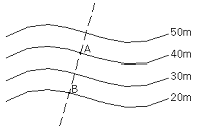
- 10%
- 20%
- 30%
- 40%
(정답률: 35%)
50. 노선측량의 작업 순서 중 노선의 기울기, 곡선, 토공량, 터널과 같은 구조물의 위치와 크기, 공사비 등을 고려하여 가장 바람직한 노선을 결정하는 단계는?
- 도상 계획
- 도상 선점
- 공사 측량
- 실측
(정답률: 39%)
51. 다음 중 공공측량으로 지정할 수 있는 일반 측량이 아닌것은?
- 측량실시지역의 면적이 1제곱 킬로미터 이상인 삼각 측량ㆍ지형측량
- 측량노선의 길이가 5킬로미터 이상인 수준측량ㆍ다각측량
- 국토지리정보원장이 발행하는 지도의 축척과 동일한 축척의 지도제작
- 촬영지역의 면적이 1제곱킬로미터 이상인 측량용 사진의 촬영
(정답률: 28%)
52. 다음 중 측량성과의 고시 내용이 아닌것은?
- 측량작업의 방법
- 측량의 종류
- 측량실시의 시기 및 지역
- 측량성과의 보관장소
(정답률: 11%)
53. 부정한 방법으로 측량업의 등록을 한 자가 받는 벌칙은?
- 2년 이하의 징역 또는 2000만원 이하의 벌금
- 1년 이하의 징역 또는 1000만원 이하의 벌금
- 2년 이하의 징역 또는 1000만원 이하의 벌금
- 3년 이하의 징역 또는 3000만원 이하의 벌금
(정답률: 28%)
54. 대한민국 수준 원점은 인천만 평균해면상의 높이로부터 그 수치를 지정하고 있다. 수준원점의 수치로 옳은 것은?
- 26.6781m
- 26.8671m
- 26.6871m
- 26.7871m
(정답률: 63%)
55. 측량심의회의 심의사항에 대한 설명으로 틀린 것은?
- 기본측량에 관한 계획의 수립 및 실시
- 측량기술자의 노임ㆍ용역대가의 기준
- 공공측량 및 일반측량에서 제외되는 측량의 범위
- 측량도서의 발간
(정답률: 40%)
56. 중앙지명위원회 위원의 수는 최대 몇 명 이내로 구성하는가? (단, 위원장 및 부위원장 각 1인을 포함한다.)
- 5인 이내
- 10인 이내
- 15인 이내
- 20인 이내
(정답률: 47%)
57. 측량법에서 정의한 측량성과란?
- 측량결과를 얻을 때까지의 측량에 관한 작업의 기록을 말한다.
- 기본측량의 최종 결과만을 말한다.
- 당해 측량에서 얻은 최종결과를 말한다.
- 공공측량의 최종 결과만을 말한다.
(정답률: 31%)
58. 시장ㆍ군수 또는 구청장은 건설교통부령이 정하는 바에 의하여 관할구역안에 있는 영구표지 또는 일시표지의 현황을 조사하고 그 결과를 시ㆍ도지사를 거쳐 건설교통부 장관에게 보고하여야 하는데 그 기간의 기준으로 옳은 것은?
- 2년에 1회 이상 보고한다.
- 매년 1회 이상 보고한다.
- 3년마다 보고한다.
- 보고는 손실, 파손된 사실을 발견했을 때만 한다.
(정답률: 58%)
59. 다음 중 측량법에서 규정한 측량업의 종류에 속하지 않는 것은?
- 공간영상도화업
- 일반측량업
- 하천의 유속 측량업
- 측지측량업
(정답률: 29%)
60. 다음 중 측량업 등록 신청서에 첨부하여야 할 서류가 아닌 것은?
- 기술능력을 갖춘 사실을 증명하는 서류
- 법인인 경우 등기부 등본
- 장비를 갖춘 사실을 증명하는 서류
- 측량 기술자의 재산 명세서
(정답률: 54%)